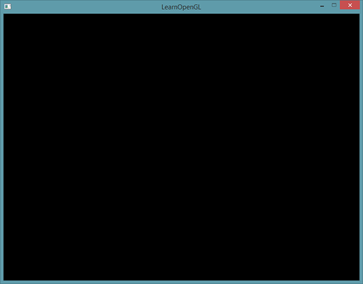

你好，窗口
| 原文 | Hello Window |
|---|---|
| 作者 | JoeyDeVries |
| 翻译 | Geequlim, Krasjet |
| 校对 | 暂未校对 |
让我们试试能不能让GLFW正常工作。首先，新建一个.cpp文件，然后把下面的代码粘贴到该文件的最前面。
#include <glad/glad.h>
#include <GLFW/glfw3.h>
Attention
请确认是在包含GLFW的头文件之前包含了GLAD的头文件。GLAD的头文件包含了正确的OpenGL头文件（例如GL/gl.h），所以需要在其它依赖于OpenGL的头文件之前包含GLAD。
接下来我们创建
int main()
{
glfwInit();
glfwWindowHint(GLFW_CONTEXT_VERSION_MAJOR, 3);
glfwWindowHint(GLFW_CONTEXT_VERSION_MINOR, 3);
glfwWindowHint(GLFW_OPENGL_PROFILE, GLFW_OPENGL_CORE_PROFILE);
//glfwWindowHint(GLFW_OPENGL_FORWARD_COMPAT, GL_TRUE);
return 0;
}
首先，我们在main函数中调用GLFW_开头的枚举值中选择；第二个参数接受一个整型，用来设置这个选项的值。该函数的所有的选项以及对应的值都可以在 GLFW’s window handling 这篇文档中找到。如果你现在编译你的cpp文件会得到大量的 undefined reference (未定义的引用)错误，也就是说你并未顺利地链接GLFW库。
由于本站的教程都是基于OpenGL 3.3版本展开讨论的，所以我们需要告诉GLFW我们要使用的OpenGL版本是3.3，这样GLFW会在创建OpenGL上下文时做出适当的调整。这也可以确保用户在没有适当的OpenGL版本支持的情况下无法运行。我们将主版本号(Major)和次版本号(Minor)都设为3。我们同样明确告诉GLFW我们使用的是核心模式(Core-profile)。明确告诉GLFW我们需要使用核心模式意味着我们只能使用OpenGL功能的一个子集（没有我们已不再需要的向后兼容特性）。如果使用的是Mac OS X系统，你还需要加下面这行代码到你的初始化代码中这些配置才能起作用（将上面的代码解除注释）：
glfwWindowHint(GLFW_OPENGL_FORWARD_COMPAT, GL_TRUE);
Important
请确认您的系统支持OpenGL3.3或更高版本，否则此应用有可能会崩溃或者出现不可预知的错误。如果想要查看OpenGL版本的话，在Linux上运行glxinfo，或者在Windows上使用其它的工具（例如OpenGL Extension Viewer）。如果你的OpenGL版本低于3.3，检查一下显卡是否支持OpenGL 3.3+（不支持的话你的显卡真的太老了），并更新你的驱动程序，有必要的话请更新显卡。
接下来我们创建一个窗口对象，这个窗口对象存放了所有和窗口相关的数据，而且会被GLFW的其他函数频繁地用到。
GLFWwindow* window = glfwCreateWindow(800, 600, "LearnOpenGL", NULL, NULL);
if (window == NULL)
{
std::cout << "Failed to create GLFW window" << std::endl;
glfwTerminate();
return -1;
}
glfwMakeContextCurrent(window);
"LearnOpenGL"，当然你也可以使用你喜欢的名称。最后两个参数我们暂时忽略。这个函数将会返回一个
GLAD
在之前的教程中已经提到过，GLAD是用来管理OpenGL的函数指针的，所以在调用任何OpenGL的函数之前我们需要初始化GLAD。
if (!gladLoadGLLoader((GLADloadproc)glfwGetProcAddress))
{
std::cout << "Failed to initialize GLAD" << std::endl;
return -1;
}
我们给GLAD传入了用来加载系统相关的OpenGL函数指针地址的函数。GLFW给我们的是glfwGetProcAddress，它根据我们编译的系统定义了正确的函数。
视口
在我们开始渲染之前还有一件重要的事情要做，我们必须告诉OpenGL渲染窗口的尺寸大小，即视口(Viewport)，这样OpenGL才只能知道怎样根据窗口大小显示数据和坐标。我们可以通过调用
glViewport(0, 0, 800, 600);
我们实际上也可以将视口的维度设置为比GLFW的维度小，这样子之后所有的OpenGL渲染将会在一个更小的窗口中显示，这样子的话我们也可以将一些其它元素显示在OpenGL视口之外。
Important
OpenGL幕后使用
然而，当用户改变窗口的大小的时候，视口也应该被调整。我们可以对窗口注册一个回调函数(Callback Function)，它会在每次窗口大小被调整的时候被调用。这个回调函数的原型如下：
void framebuffer_size_callback(GLFWwindow* window, int width, int height);
这个帧缓冲大小函数需要一个
void framebuffer_size_callback(GLFWwindow* window, int width, int height)
{
glViewport(0, 0, width, height);
}
我们还需要注册这个函数，告诉GLFW我们希望每当窗口调整大小的时候调用这个函数：
glfwSetFramebufferSizeCallback(window, framebuffer_size_callback);
当窗口被第一次显示的时候
我们还可以将我们的函数注册到其它很多的回调函数中。比如说，我们可以创建一个回调函数来处理手柄输入变化，处理错误消息等。我们会在创建窗口之后，渲染循环初始化之前注册这些回调函数。
准备好你的引擎
我们可不希望只绘制一个图像之后我们的应用程序就立即退出并关闭窗口。我们希望程序在我们主动关闭它之前不断绘制图像并能够接受用户输入。因此，我们需要在程序中添加一个while循环，我们可以把它称之为
while(!glfwWindowShouldClose(window))
{
glfwSwapBuffers(window);
glfwPollEvents();
}
glfwWindowShouldClose 函数在我们每次循环的开始前检查一次GLFW是否被要求退出，如果是的话，该函数返回true，渲染循环将停止运行，之后我们就可以关闭应用程序。glfwPollEvents 函数检查有没有触发什么事件（比如键盘输入、鼠标移动等）、更新窗口状态，并调用对应的回调函数（可以通过回调方法手动设置）。glfwSwapBuffers 函数会交换颜色缓冲（它是一个储存着GLFW窗口每一个像素颜色值的大缓冲），它在这一迭代中被用来绘制，并且将会作为输出显示在屏幕上。
Important
双缓冲(Double Buffer)
应用程序使用单缓冲绘图时可能会存在图像闪烁的问题。 这是因为生成的图像不是一下子被绘制出来的，而是按照从左到右，由上而下逐像素地绘制而成的。最终图像不是在瞬间显示给用户，而是通过一步一步生成的，这会导致渲染的结果很不真实。为了规避这些问题，我们应用双缓冲渲染窗口应用程序。前缓冲保存着最终输出的图像，它会在屏幕上显示；而所有的的渲染指令都会在后缓冲上绘制。当所有的渲染指令执行完毕后，我们交换(Swap)前缓冲和后缓冲，这样图像就立即呈显出来，之前提到的不真实感就消除了。
最后一件事
当渲染循环结束后我们需要正确释放/删除之前的分配的所有资源。我们可以在
glfwTerminate();
return 0;
这样便能清理所有的资源并正确地退出应用程序。现在你可以尝试编译并运行你的应用程序了，如果没做错的话，你将会看到如下的输出：

如果你看见了一个非常无聊的黑色窗口，那么就对了！如果你没得到正确的结果，或者你不知道怎么把所有东西放到一起，请到这里参考源代码。
如果程序编译有问题，请先检查连接器选项是否正确，IDE中是否导入了正确的目录（前面教程解释过）。并且请确认你的代码是否正确，直接对照上面提供的源代码就行了。如果还是有问题，欢迎评论，我或者其他人可能会帮助你的。
输入
我们同样也希望能够在GLFW中实现一些输入控制，这可以通过使用GLFW的几个输入函数来完成。我们将会使用GLFW的
void processInput(GLFWwindow *window)
{
if(glfwGetKey(window, GLFW_KEY_ESCAPE) == GLFW_PRESS)
glfwSetWindowShouldClose(window, true);
}
这里我们检查用户是否按下了返回键(Esc)（如果没有按下，WindowShouldClose属性设置为 true来关闭GLFW。下一次while循环的条件检测将会失败，程序将关闭。
我们接下来在渲染循环的每一个迭代中调用
while (!glfwWindowShouldClose(window))
{
processInput(window);
glfwSwapBuffers(window);
glfwPollEvents();
}
这就给我们一个非常简单的方式来检测特定的键是否被按下，并在每一帧做出处理。
渲染
我们要把所有的渲染(Rendering)操作放到渲染循环中，因为我们想让这些渲染指令在每次渲染循环迭代的时候都能被执行。代码将会是这样的：
// 渲染循环
while(!glfwWindowShouldClose(window))
{
// 输入
processInput(window);
// 渲染指令
...
// 检查并调用事件，交换缓冲
glfwPollEvents();
glfwSwapBuffers(window);
}
为了测试一切都正常工作，我们使用一个自定义的颜色清空屏幕。在每个新的渲染迭代开始的时候我们总是希望清屏，否则我们仍能看见上一次迭代的渲染结果（这可能是你想要的效果，但通常这不是）。我们可以通过调用
glClearColor(0.2f, 0.3f, 0.3f, 1.0f);
glClear(GL_COLOR_BUFFER_BIT);
注意，除了
Important
你应该能够回忆起来我们在 OpenGL 这节教程的内容，

这个程序的完整源代码可以在这里找到。
好了，现在我们已经做好开始在渲染循环中添加许多渲染调用的准备了，但这是下一节教程了，这一节的内容已经太多了。